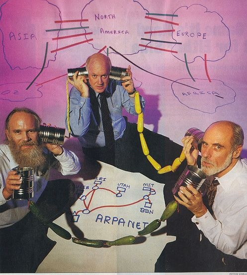
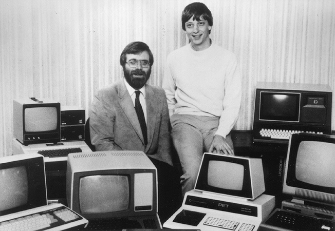

Moving towards the Internet
1977: Lawrence Landweber Creates Computer Science Network, a network for all US University and industrial computer research groups.

1983: Jon Postel, Paul Mockapetris, and Craig Patridge develop the DNS (Domain Name System). Such as: com, gov, net, mil, edu, int, and org.
 1979:
1979: Atari introduces its Model 400 and 800 computers. At this point in time, over half a million computers are in use in the United States.

1980: Paul Allen and Bill Gates are hired by IBM to create an operating system for IBM’s newest models of computers.
1983: The ARPAnet changes its network protocol from Network Control Programs to the TCP/IP protocol.